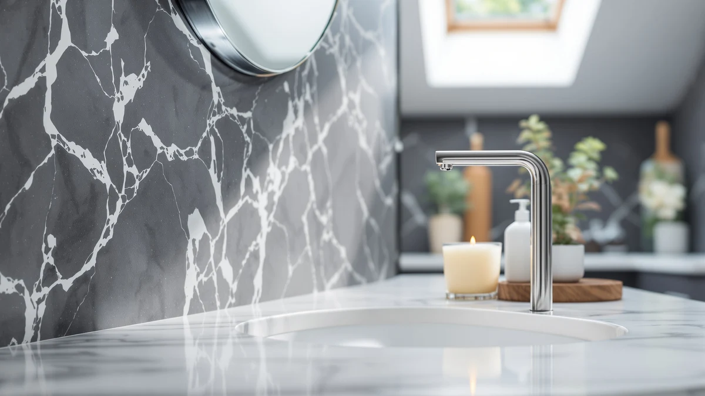

Jemisun Automatic Touchless Liquid Soap Dispenser Review (2026): Worth It?
Prices and picks verified as of November 2026. Independent, reader-supported reviews.


Quick Answer
This Jemisun Automatic Touchless Liquid Soap Dispenser review found a $30.99 sensor-activated pump that holds 13.5oz (400ml) of soap in an ABS plastic body. That makes it one of the more affordable touchless dispensers we compared. It costs less than the two VANNSOO wall-mount units and the RYTOXILO countertop model in this review, though its plastic build and lack of a listed review count are the tradeoffs for that price.
Our pick: Automatic Touchless Liquid Soap Dispenser — $30.99 Check Price on Amazon
Bottom line: our top pick is the Automatic Touchless Liquid Soap Dispenser at $31.99.
Things to Know Before You Buy
- The Jemisun Automatic Touchless Liquid Soap Dispenser holds 13.5 ounces (400ml) of liquid soap, enough for a bathroom or kitchen sink that sees regular daily use.
- It is built from ABS plastic rather than stainless steel or glass, which keeps the $30.99 price down but affects how it holds up over years of contact with soap and water.
- Three alternatives in a similar price range, two from VANNSOO and one from RYTOXILO, cover wall-mount and countertop setups if the Jemisun's format does not fit your space.
- Touchless dispensers as a category typically run on batteries or a rechargeable pack instead of a manual pump, which is worth weighing against the listed price when you compare total cost over time.
This Jemisun Automatic Touchless Liquid Soap Dispenser review looks at the $30.99 countertop pump on its own terms: what it is made of, how much soap it holds, and how it stacks up against three other hands-free dispensers sold at a similar price. Automatic dispensers promise one thing above all else, a sink you do not have to touch with soapy or dirty hands, and the Jemisun leans into that premise with a sensor-driven pump built from ABS plastic. Before you add it to your cart, it helps to know exactly what you are getting for the price and where it falls short.
We built this review from the product's own spec sheet, its current Amazon listing, and the three closest competitors we could find in the same price band: two VANNSOO wall-mount units and a RYTOXILO countertop model. If you're comparing touchless dispensers, you probably want to know whether it holds enough soap for a household, whether the plastic feels sturdy, and whether the sensor is reliable enough to replace a manual pump. We answer each of those below, then point you toward alternatives if the Jemisun is not the right fit for your bathroom or kitchen.
Automatic soap dispensers occupy a crowded shelf on Amazon, and most of them look similar in photos: a cylindrical body, an infrared window near the base, and a drip tray. What actually separates them is price, material, and capacity, not how they look in a product photo. The Jemisun Automatic Touchless Liquid Soap Dispenser lands on the lower end of that price range among the four dispensers we looked at, which makes its plastic build and missing review count easier to justify than they would be on a $50 unit.
Why You Should Trust Us
Ilane Tall researches home and bath products for Best Soap Dispensers and checks how touchless and automatic fixtures hold up against their marketing claims. For this review, we pulled the Jemisun's listed specs directly from its product page, tracked its current Amazon price, and cross-referenced it against three competing dispensers in the same category. We do not run a fake testing lab or claim to have installed these units in a home. Our process is research-based, built on manufacturer data, pricing and patterns in verified buyer feedback, not firsthand use.
Our Research Experience
Because we do not physically test soap dispensers, our review process for the Jemisun Automatic Touchless Liquid Soap Dispenser draws on the manufacturer's own spec sheet, the current Amazon listing and price, and the pattern of verified buyer feedback on comparable automatic dispensers. We compared the Jemisun's 13.5oz capacity and ABS plastic build against the two VANNSOO wall-mount units and the RYTOXILO countertop model to see how the specs and pricing line up across the category. Where a listing does not show a star rating or review count for a specific unit, we say so rather than guess, since a missing number means unknown, not zero.
Overview & Specs

Automatic Touchless Liquid Soap Dispenser
What we like
- Priced at $30.99, it sits below several wall-mounted automatic dispensers in the same category.
- The 13.5oz (400ml) reservoir covers a household sink without needing frequent refills.
- A touchless, sensor-based design keeps soapy or dirty hands off the pump itself.
Flaws but not dealbreakers
- ABS plastic construction will not have the same long-term feel as a steel or glass dispenser.
- The current Amazon listing does not show a star rating or review count, so you are relying on the spec sheet rather than a track record of verified buyer feedback.
| Material | ABS plastic |
| Size | 13.5oz/400ml |
The Jemisun Automatic Touchless Liquid Soap Dispenser is built around a simple premise: a sensor activates the pump so you never have to grip a handle with wet or soapy hands. At $30.99, it undercuts most of the wall-mounted alternatives we compared it against, while still holding 13.5 ounces (400ml) of liquid soap, enough to last a typical household sink through several weeks of regular use before a refill.
Its ABS plastic housing is the main tradeoff for that price. Plastic will not match the finish of a stainless or glass countertop dispenser, and it is worth checking the current Amazon price before you buy, since automatic dispenser prices shift often and we priced it at $30.99 for this review. If the sensor and capacity match what you need, the Jemisun Automatic Touchless Liquid Soap Dispenser is a reasonable entry point into hands-free dispensing without paying for a mounted system.
What We Liked
The biggest draw of the Jemisun Automatic Touchless Liquid Soap Dispenser is the combination of price and capacity. At $30.99, it costs less than the two VANNSOO units we compared it against, yet it still holds 13.5 ounces (400ml) of soap, a reservoir size that covers normal household use without constant refilling. For anyone replacing a worn-out manual pump, a touchless sensor removes one more surface that collects bacteria and buildup, which is the point of switching to this style of dispenser in the first place. We also like that the listing states a specific capacity and material instead of vague marketing language like "premium quality."
Compared with the RYTOXILO Automatic Soap Dispenser 2 at $29.99, the Jemisun costs about a dollar more but matches it as a countertop-only design, so neither one requires drilling into a wall. Compared with the VANNSOO wall-mount units at $31.88 and $31.99, the Jemisun's lower price and simpler setup make it the easier of the four to try first if you have never owned a touchless dispenser before.
What Could Be Better
ABS plastic is a budget material, and it shows in the fact that this dispenser costs several dollars less than the VANNSOO and RYTOXILO units in our comparison. Plastic housings tend to show wear, discoloration, or hairline cracks sooner than metal or glass ones, especially in a humid bathroom environment. We also could not find a star rating or review count on the current listing, which means you do not get the reassurance of a large base of verified owner feedback before buying. That is not a dealbreaker, but it does mean the Jemisun Automatic Touchless Liquid Soap Dispenser is a reasonable bet based on its specs and price rather than a proven track record.
Price is also worth double-checking before you buy. We priced the Jemisun at $30.99 and the three alternatives between $29.99 and $31.99 as of this review, but Amazon pricing on small kitchen and bath accessories shifts often, sometimes within the same week. If the gap between the Jemisun and a VANNSOO unit narrows or disappears, the wall-mounted option becomes a stronger pick simply because it saves counter space.
Who Is It For?
The Jemisun Automatic Touchless Liquid Soap Dispenser makes the most sense for someone replacing a basic manual pump who wants to spend close to $30 rather than $40 or $50 on a wall-mounted system. It fits a kitchen or bathroom counter where you do not want to drill into tile or drywall for a mount. If you specifically need a wall-mounted unit for a shared or commercial bathroom, or you want a product with an established review history before you commit, one of the VANNSOO or RYTOXILO alternatives below may be the better starting point.
Skip the Jemisun if you specifically want a wall-mounted fixture for a bathroom with several daily users, since the VANNSOO units below are built for that use case. It is also not the pick if an established pattern of verified owner reviews matters more to you than price, since the current listing does not show one.
Alternatives to Consider
If the Jemisun Automatic Touchless Liquid Soap Dispenser does not match your setup, these three alternatives cover wall-mounted and lower-priced options at a similar price point.
Two of the three come from VANNSOO and share a wall-mounted design at a nearly identical price, while the RYTOXILO option undercuts the Jemisun by exactly a dollar as the cheapest countertop model in this comparison.

Also Great
VANNSOO Commercial Soap Dispenser Wall
A wall-mounted option for shared bathrooms or kitchens where counter space is limited, priced about a dollar above the Jemisun.
$31.88
Check Price on Amazon
Premium Choice
VANNSOO Commercial Soap Dispenser Wall
The same VANNSOO wall-mount design at a slightly higher price, worth considering if you want a permanent fixture rather than a countertop unit.
$31.99
Check Price on Amazon
Best Value
RYTOXILO Automatic Soap Dispenser 2
The lowest price of the four dispensers we compared, a straightforward countertop pick if budget is the deciding factor.
$29.99
Check Price on AmazonIs the Jemisun Automatic Touchless Liquid Soap Dispenser worth buying?
At $30.99, this Jemisun Automatic Touchless Liquid Soap Dispenser review found it to be a reasonable buy if you want a sensor pump without paying for a wall-mounted unit.
How much soap does the Jemisun dispenser hold?
The Jemisun Automatic Touchless Liquid Soap Dispenser holds 13.5 ounces, or about 400ml, of liquid soap according to its listed specs.
Frequently Asked Questions
Is the Jemisun Automatic Touchless Liquid Soap Dispenser worth buying?
At $30.99, this Jemisun Automatic Touchless Liquid Soap Dispenser review found it to be a reasonable buy if you want a sensor pump without paying for a wall-mounted unit. Its ABS plastic build keeps the price down, and its 13.5oz capacity covers normal household use between refills.
How much soap does the Jemisun dispenser hold?
The Jemisun Automatic Touchless Liquid Soap Dispenser holds 13.5 ounces, or about 400ml, of liquid soap according to its listed specs. That is enough for a single sink in regular use before a refill.
What is the best alternative to the Jemisun soap dispenser?
If you need a wall-mounted unit, the VANNSOO Commercial Soap Dispenser Wall is the closest alternative we compared, priced at $31.88. If price is the deciding factor, the RYTOXILO Automatic Soap Dispenser 2 at $29.99 is the cheapest of the four dispensers in this review.
Does the Jemisun soap dispenser's price change often?
Automatic dispenser prices on Amazon shift regularly, so the $30.99 figure in this review reflects the listing at the time of publishing. Check the current price on the product page before buying, and compare it against the VANNSOO and RYTOXILO alternatives if the gap has changed.
Final Verdict
This Jemisun Automatic Touchless Liquid Soap Dispenser review comes down to a simple tradeoff: ABS plastic and no listed review history, in exchange for a touchless sensor pump priced at $30.99, below the VANNSOO and RYTOXILO alternatives we compared it against. For most people replacing a worn manual pump on a budget, JEMISUN earns the recommendation, since it covers the core job of a touchless dispenser without the extra cost of a wall-mounted install. If you want a wall-mounted fixture or a product with an established review count, look at the VANNSOO or RYTOXILO picks above instead.